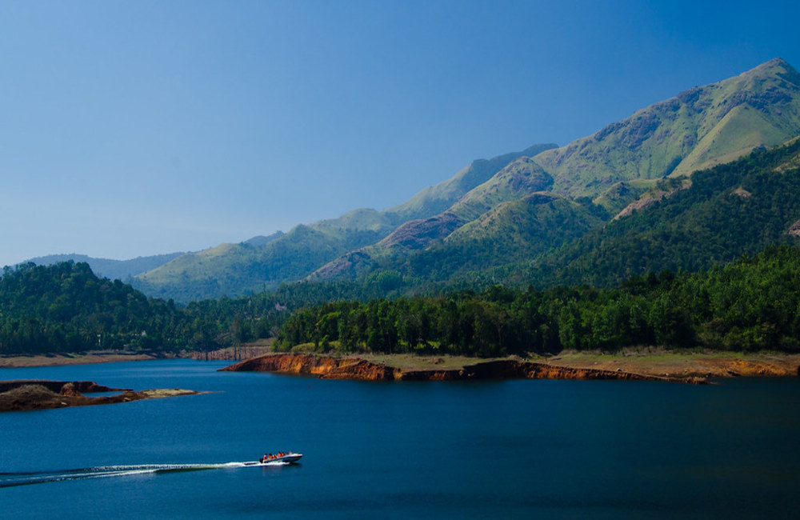
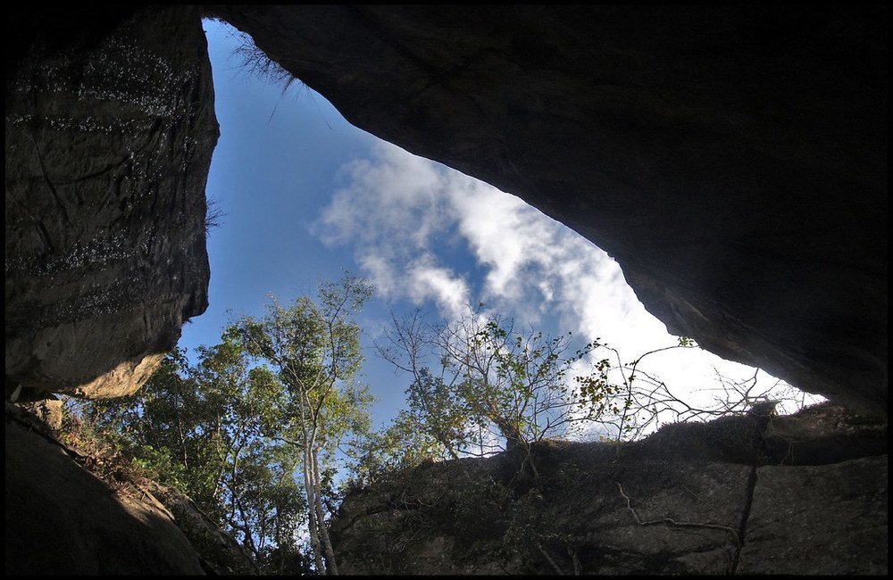
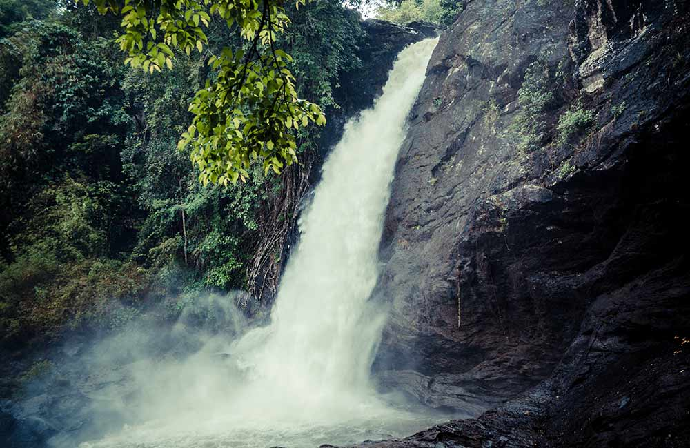

01.Banasura Sagar Dam

Banasura Sagar Dam, located on the Banasura foothills and surrounded by greenery, is one of the best places to visit in Wayanad. The place has a lot of natural beauty and is popular with people who want to spend some time relaxing in the midst of lushness. Boating on the lake is also an option, as is hiking up to the dense forests of Banasura Peak. The view from the top of the hill is mesmerising, with majestic hills, gushing waterfalls, and diverse flora and fauna. Remember to carry your camera with you so you can capture stunning panoramic views of the surroundings.
Best Time to Visit:September to March.
Ideal Duration:2 hours.
How to Reach: The dam is about 28 km away from the Wayanad centre, so you can take a taxi to reach the destination. .
02.Edakkal Caves

Edakkal Caves are the only structures in India with about 8000-year-old carvings that date back to the Neolithic Era or the late Stone Age. The two caves are located on Ambukuthi Hills, 3937-feet above sea level. As a result, one must trek for approximately 2 hours before reaching the entrance. Apart from tourists, history buffs and archaeology students interested in studying the carvings of human figures and animals visit these mysterious caves.
Best Time to Visit:
November to March.
Ideal Duration:2-3 hours
How to Reach:Edakkal Caves are 19 km away from Wayanad Centre. Taxis are easily available for comfortable travel.
03.Soochipara Falls

The three-tiered Soochipara Falls in Vellarimala, also known as Sentinel Rock Waterfalls, is a beautiful place in Wayanad. The sight of large volumes of water cascading from a height of 656-feet among lush green forests and massive rocks is a visual treat! Apart from spending some tranquil time near the falls, you can also take a bath or swim in the pool below and go rock climbing.
Best Time to Visit: Monsoon season
Ideal Duration: 1-2 hours
How to Reach: The falls are 35 km away from Wayanad centre. You can take a bus or taxi to cover the distance.